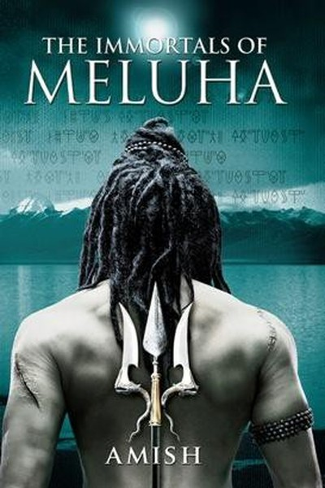

Library › Power & Strategy
The Immortals of Meluha — Summary & Key Lessons

Shiva as a tribal chief — leadership is decisions, not destiny.
📖 OPEN THE FULL INTERACTIVE BREAKDOWN →🌐 Read it in Hindi, Hinglish, Gujarati, Tamil & 22 more languages — free, with audio.
💡 The Big Idea
Amish's debut reimagines Shiva — the destroyer god — as a Tibetan tribal leader who stumbles into a war between the Suryavanshis of Meluha and the Chandravanshis. The book is a masterclass in leadership disguised as mythology: Shiva is not divine at birth; he is an ordinary man who becomes extraordinary through decisions. Key ideas: leadership is a burden chosen, not a crown granted; a ruler's first duty is to the truth, even when it is inconvenient; alliances and enemies are fluid; and the greatest leaders inspire ordinary people to attempt the impossible. Power, in Amish's Meluha, is earned by action, not claimed by birth.
🧠 The 6 Key Lessons
Lesson 1: Leaders Are Made by Decisions, Not Destiny
The Outsider
Shiva begins as a warrior chief of a small tribe — no royal blood, no prophecy. He becomes Mahadev because, at every crossroads, he chooses the harder right over the easier wrong. Amish's core argument: greatness is a series of decisions, not a birthright. Every person faces moments where they can stay safe or step forward; leaders are simply the ones who step forward consistently. The universe does not hand you a role — it hands you situations, and your choices write your identity. The Mahadev title is earned on the battlefield of everyday judgment.
📖 Example: When Shiva first learns that Meluha's 'holy water' may be part of a hidden agenda, he doesn't ignore it — he investigates, confronts the Suryavanshi emperor, and risks the alliance. The decision, not the sword, is what makes him a leader. Read the full example →
⚡ Do this: Identify one decision you are avoiding because it's hard. Make it today — leaders are made in exactly these moments.
Lesson 2: The First Duty of a Leader Is the Truth
Truth & Deception
Meluha is built on a lie — the 'holy water' that heals also manipulates. When Shiva discovers it, he refuses to accept the convenient narrative, even though the lie serves the war effort. Amish's lesson: a kingdom (or company, or family) that runs on deception builds power on sand. Truth-telling is not naive — it is strategic, because lies accumulate into collapse. The leader who protects the truth protects the future; the leader who protects the lie protects only the present. In the long run, reality always wins — and the leader who told it early wins with it.
📖 Example: The Suryavanshi leadership justifies the water's side-effects as 'necessary for victory'. Shiva's refusal to accept this justification nearly destroys the alliance — but it also exposes the rot, and Meluha is eventually forced to confront what it did. Read the full example →
⚡ Do this: Find one uncomfortable truth in your work or life that everyone avoids. Name it — privately first, then with one trusted ally.
Lesson 3: Enemies and Allies Are Situations, Not Identities
The Game of Alliances
Amish's world has no permanent villains — the Chandravanshis are enemies, then potential allies; Meluha is ally, then suspect. The lesson: in strategy, loyalty is a function of interests, not identity. A wise leader constantly re-evaluates: whose interests align today? Whose might align tomorrow? The greatest strategic error is treating yesterday's enemy as today's enemy by habit. Flexibility — not cynicism — is the mark of strategic maturity. You keep your principles fixed but your alliances fluid.
📖 Example: Shiva initially fights for Meluha against the Chandravanshis, only to discover the Chandravanshi queen shares his suspicions about Meluha's manipulations. The 'enemy' becomes a necessary conversation partner — shifting the entire war's shape. Read the full example →
⚡ Do this: List your 3 biggest 'allies' and 3 'enemies' (competitors, opponents). For each, write: what are their interests? Re-evaluate quarterly.
Lesson 4: Ordinary People Do Extraordinary Things When Inspired
The Power of Belief
Amish's battle scenes hinge on one psychological truth: soldiers fight not for land but for belief. Shiva's tribe fights beyond their numbers because he makes them believe they are more than their numbers. Leaders multiply capability by changing identity — telling people not 'you can do this' but 'this is who you are'. The difference between a mob and an army is a story they believe. The lesson transfers directly to teams: the leader's highest leverage act is narrative. People will endure hardship, uncertainty and fear if they believe the cause is theirs.
📖 Example: When Shiva's small force faces annihilation, he doesn't give a tactical speech — he reminds his men who they are: 'We are the ones who do not run.' The identity shift, not the strategy, turns the battle. Read the full example →
⚡ Do this: Write a 3-line 'who we are' statement for your team or family. Use it before the next challenge, not after.
Lesson 5: Accept the Burden or Hand Over the Throne
The Reluctant King
Shiva repeatedly tries to refuse the role of Mahadev — he wants a quiet life. But Amish's point is sharp: refusing leadership is itself a decision with consequences. If you are the best person for the role and you walk away, you are not being humble — you are abandoning people who depended on you. Leadership is a burden that some carry out of duty, not desire. The book rejects the idea that only 'born leaders' should lead; it demands that capable people stop hiding behind reluctance. The throne is not a privilege; it is a responsibility that someone must take.
📖 Example: Every time Shiva tries to retreat to a simple life, a situation pulls him back — because his tribe, then Meluha, then the war, needs exactly his judgment. His 'reluctance' is exposed as the luxury of those who can afford to ignore others' need. Read the full example →
⚡ Do this: If you've been avoiding a leadership role (at work, home, community), write down who is hurt by your absence. Decide this week.
Lesson 6: The Best Way to Destroy an Empire Is From Within Its Lies
The Collapse
Meluha's empire is eventually threatened not by Chandravanshi armies but by the contradictions in its own foundation. Amish's warning: any system — nation, company, relationship — that institutionalizes a lie becomes fragile at the exact point of the lie. The most dangerous enemies are not external; they are the truths we refused to face. Leaders who audit their own foundations — asking 'what are we pretending not to know?' — defuse collapse in advance. The empire that can tell itself the truth is the empire that survives the truth when it arrives.
📖 Example: Meluha's scientists knew about the water's manipulation for years but silenced themselves for 'the greater good'. When the truth surfaces mid-war, the empire fractures internally — losing more to its own betrayal than to any enemy sword. Read the full example →
⚡ Do this: Run the audit: 'What are we pretending not to know?' Ask it of your work, your money, your health. Act on one answer.
✅ 5-Step Action Plan
- Make one avoided hard decision today — leaders are made in those moments.
- Name one uncomfortable truth everyone is avoiding; raise it with an ally.
- Re-evaluate one 'enemy' and one 'ally' by interests, not labels.
- Write a 3-line identity statement for your team — use it before the next challenge.
- Run the 'what are we pretending not to know?' audit on one area of your life.
💬 Best Quotes from The Immortals of Meluha
- “A leader is not born. A leader is made — by every decision he refuses to run from.”
- “The truth may be inconvenient, but convenience is a poor foundation for an empire.”
- “Men do not die for land. They die for what they believe they are.”
Interactive version: mark lessons as read, listen in your language, share quote cards.